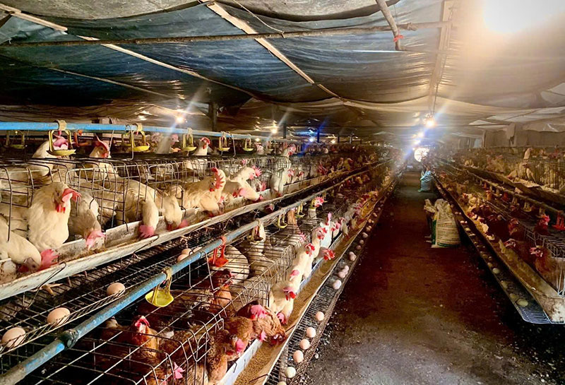

VIGGA.
HỆ THỐNG QUẢN LÝ TRANG TRẠI THÔNG MINH
Sinh viên thực hiện
Phan Duy Hoàng
Nguyễn Quang Quân
Nguyễn Thị Hồng Mơ
Dương Thị Kim Yến
Ấn [ ENTER ] để tiếp tục
1. BÀI TOÁN THỰC TIỄN
- Dịch bệnh hô hấp: Biến thiên khí độc NH3 và sốc nhiệt làm gia cầm bệnh hàng loạt.
- Lãng phí tài nguyên: Hệ thống làm mát vận hành thủ công gây tiêu hao điện, nước.
- Đứt gãy dữ liệu: Báo cáo hạch toán chậm trễ từ 15-30 ngày.

2. MỤC TIÊU NGHIÊN CỨU
3. KIẾN TRÚC 3 TẦNG (3-TIER)

-
TẦNG BIÊN (EDGE):
ESP32 NodeMCU kết nối vạn vật, đẩy gói tin JSON qua Wi-Fi. -
TẦNG BACKEND:
Node.js Serverless (Railway) xử lý tính toán. TiDB lưu trữ. -
TẦNG GIAO DIỆN:
Web Frontend vẽ đồ thị và cung cấp UI quản trị Mini-ERP.
4. LỰA CHỌN PHẦN CỨNG
Vi điều khiển ESP32
Xung nhịp 240MHz, tích hợp Wi-Fi. Khắc phục nhược điểm rườm rà của Arduino truyền thống.
Module Cảm biến
DHT22: Đo nhiệt độ, độ ẩm chính xác cao.
MQ-135: Phát hiện nồng độ NH3 qua chân ADC Analog.
5. BÀI TOÁN NÚT THẮT (BOTTLENECK)
- Vấn đề: Ép mạch ESP32 vừa đọc cảm biến, vừa chạy AI Camera sẽ gây thiếu chân GPIO và tràn RAM (Crash).
-
Giải pháp Decoupling (Tách lớp):
- Mạch ESP32: Chỉ tập trung đo cảm biến và đóng/ngắt Relay.
- Phân tích AI: Đẩy lên trình duyệt Web xử lý bằng thư viện
ml5.jsđể mạch chạy ổn định 24/7.
6. MÔ PHỎNG WOKWI SIMULATOR
- Giảm thiểu rủi ro cháy nổ phần cứng.
- Giả lập cảm biến khí độc bằng Biến trở (Potentiometer).
- Test chuẩn luồng API từ Cloud về mạch trước khi hàn thật.

7. CƠ SỞ DỮ LIỆU TIDB CLOUD
8. GIAO THỨC HTTP POLLING
Tại sao không dùng WebSockets?
- Chu kỳ 3 giây: Mạch báo cáo và hỏi lệnh định kỳ, sau đó ngủ. Không mở cổng mạng liên tục giúp mạch không bị treo.
- Thực tiễn: Khí hậu thay đổi chậm, tạo độ trễ 3s giúp chống nhiễu cảm biến, tránh bật/tắt quạt liên tục gây cháy động cơ.
9. THUẬT TOÁN ĐIỀU KHIỂN KÉP
Logic Quyết Định
Sử dụng Toán tử HOẶC (||). Mạch kích hoạt Relay khi nhiệt độ nóng hoặc nồng độ NH3 vượt ngưỡng cảnh báo.
// Quyết định tại Web Server
function dieuKhien(nhiet, khi) {
if (nhiet >= 31 || khi >= 18) {
return "ON"; // Bật Quạt
} else {
return "OFF";
}
}
function dieuKhien(nhiet, khi) {
if (nhiet >= 31 || khi >= 18) {
return "ON"; // Bật Quạt
} else {
return "OFF";
}
}
10. GIAO DIỆN WEB & MINI ERP
- TailwindCSS: Tối ưu hóa trải nghiệm người dùng (UX/UI). Đồ thị Chart.js mượt mà.
- Kỹ thuật Nhân bản: Trình diễn giả lập 5 chuồng trại đa dạng từ 1 Node vật lý để chứng minh khả năng Scale.
- Tự động hóa ERP: Thuật toán nền tự động bóc tách chi phí phát sinh vào danh mục hạch toán kế toán.
11. ĐÁNH GIÁ KẾT QUẢ
12. HƯỚNG PHÁT TRIỂN TƯƠNG LAI
Nâng cấp Giao thức
Chuyển đổi từ HTTP sang giao thức nhẹ MQTT để giảm dung lượng gói tin khi áp dụng quy mô lớn.
Tích hợp AI Camera
Sử dụng ESP32-CAM và nhận diện hình ảnh để đếm tổng đàn và cảnh báo vật nuôi ốm.
CẢM ƠN!
Báo cáo dự án VIGGA xin được kết thúc.